本书作者：测试开发刚哥，文章版权归个人所有，未经授权请勿转载。
本文开发内容
用例管理是对用例进行增删改查，按照前面文章的思路，把它做出来应该不难，如果你已经自己写好了，那么可以和本文提交的代码比较下看看。除了增删改查，用例管理还需要提供运行用例的入口，在操作列添加一个运行按钮，单条用例运行，并弹窗展示运行结果。用例列表需要能看到每条用例执行情况，添加表格列用于展示，其中“运行结果”列要有超链接，点击查看上次运行结果。为了避免修改别人用例出错，还需要有个复制用例功能。除了在线编辑，平台应支持下载项目环境到本地，无缝切换到 PyCharm，让新用户快速上手。综上所述，本文开发内容如下：
- 用例增删改查。
- 运行按钮，点击后弹出“运行用例结果”。
- 添加表格展示列，其中“运行结果”用颜色区分不同结果状态：passed，failed，error，点击超链接后弹出“查看用例结果”。
- 复制按钮，点击后生成一条复制的新用例。
- 新增/编辑页面，添加运行按钮。
- 运行/查看页面，添加编辑按钮。
- 下载环境到本地。
工作量主要在前端，后端先做一部分。
编写后端代码
编辑 teprunner/urls.py，添加路由：
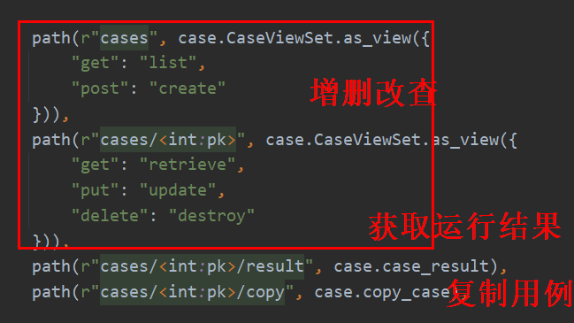
除了增删改查，还添加了 2 个接口，一个用于获取用例运行的结果，一个用于复制测试用例。
编辑 teprunner/models.py，添加模型：
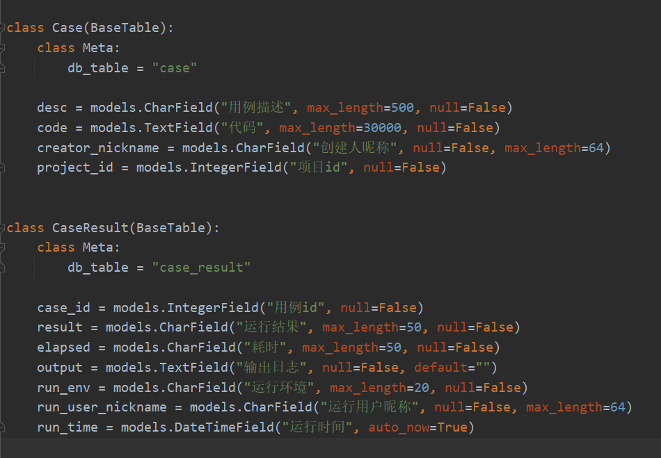
第一个 Model 是 Case，没有定义 name 字段，实际上用例 ID 和用例描述已经够用了，name 不知道填什么，有点多余。第二个 Model 是 CaseResult，会记录运行结果，这个运行结果是从 pytest 执行日志最后一行的 Summary 截取出来的，比如 1 passed，1 failed，耗时也是从 Summary 截取出来的。output 存放代码运行后打到控制台的输出日志。最后三个字段记录运行环境、运行人和运行时间，运行时间取的数据库记录被添加/更新的时间。添加好以后迁移到数据库中：
python manage.py makemigrations
python manage.py migrate
编辑 teprunner/serializers.py，添加序列化器，第一个序列化器是 CaseSerializer：
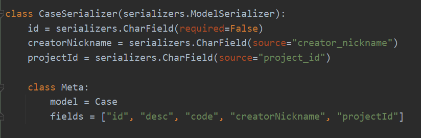
只关联了 Case 模型的字段。
第二个序列化器是 CaseListSerializer：
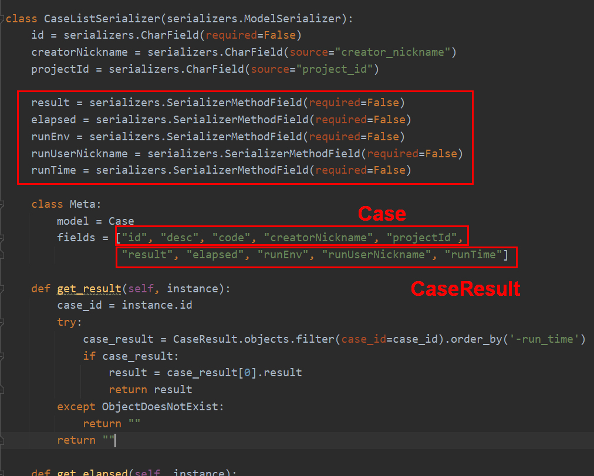
它主要用来返回用例列表的数据，除了用例本身，还需要用例结果。serializers.SerializerMethodField 用于自定义序列化字段，定义好字段后，在下面添加get_前缀+字段名的方法，这是 Django 的规则，然后在方法内部添加取值代码，比如 get_result()，instance 是指 Meta.model 定义的模型，这里就等同于 Case，通过 instance.id 获取到 Case.id 并赋值给 case_id 变量，从 CaseResult 的对象中过滤 case_id 匹配的用例结果，按运行时间倒序，取最新 1 条结果的 result 字段的值。其他字段的处理是类似的，runTime 这里做了下日期格式化：
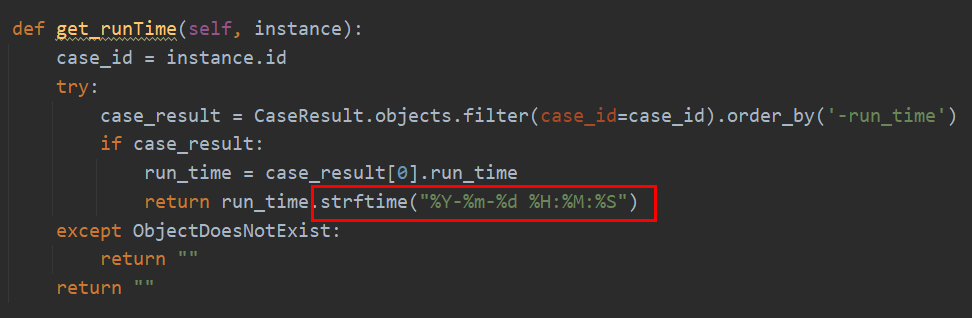
第三个序列化器是 CaseResultSerializer：
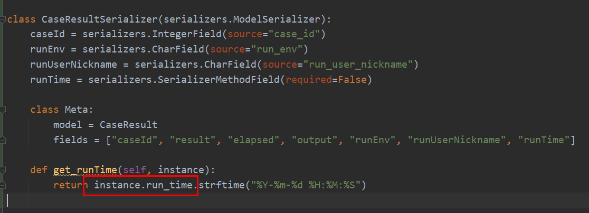
只关联了 CaseResult 模型的字段，runTime 同样做了日期格式化。从这里也能更清晰的看到，instance 就是指的自己！
新建 teprunner/views/case.py 文件，添加视图，先把简单的两个视图做了，第一个视图是 case_result：
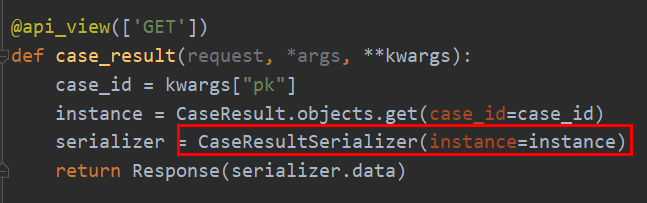
这里是个知识点，采用@api_view 注解的函数视图，如果想用序列化器，那么采用这种方式。
第二个视图是 copy_case：
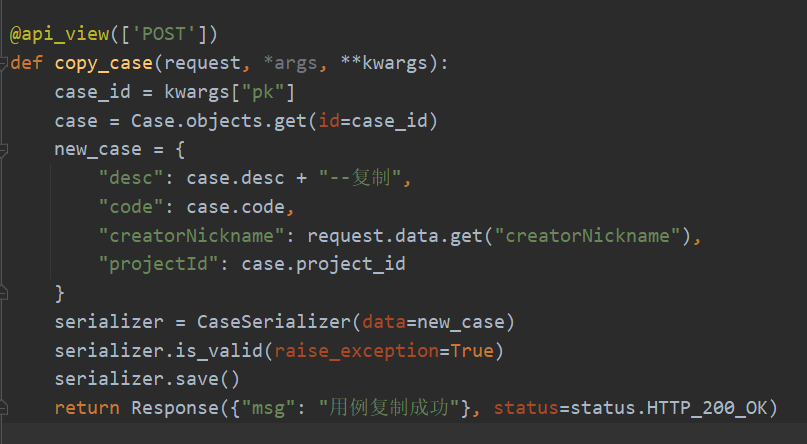
根据 case_id 查找到现有 Case 对象，在 case.desc 后面添加--复制后缀，其他字段数据复用，保存，就完成复制用例了。
第三个视图是 CaseViewSet：
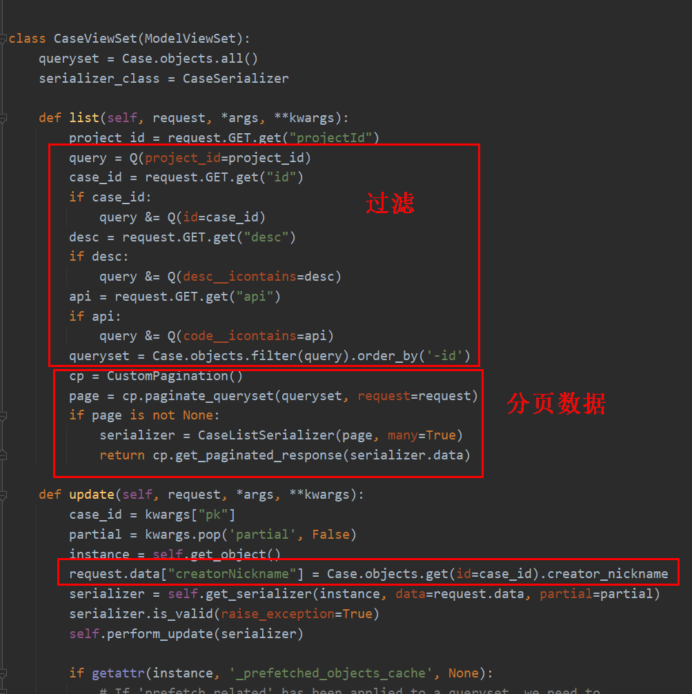
继承了 ModelViewSet，重写了 list 列表查询，因为如果不重写，默认返回的结果是 serializer_class = CaseSerializer 序列化器的内容。我们需要的是 CaseListSerializer 这个序列化器的内容。这里也是一个知识点！如果想在类视图中，使用 serializer_class 以外的序列化器加分页，采用这种方式。
重写的 list 方法首先添加了 project_id、case_id、desc、api 四个过滤条件，与前端的当前项目、用例 ID 搜索框、用例描述搜索框、API 路径搜索框一一对应。__icontains表示包含，相当于模糊匹配，i忽略大小写。接着用到了自定义分页的类，按照统一的分页格式，返回序列化器的数据。
最后，重写了 update 方法，用现有的创建人进行更新。
编写前端代码
编辑 router/index.js，添加路由：
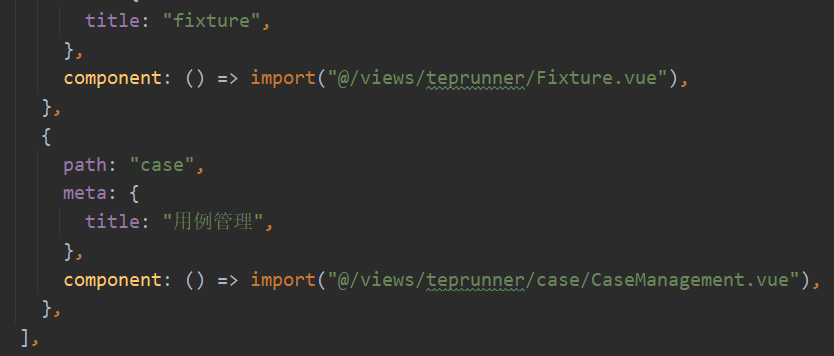
编辑 views/teprunner/index.vue，添加菜单项：
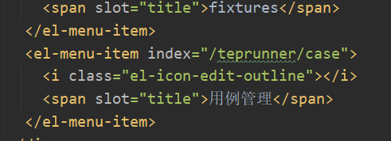
新建 views/teprunner/case/CaseManagement.vue 文件，增删改查基础代码不再另加赘述，挑选新代码：
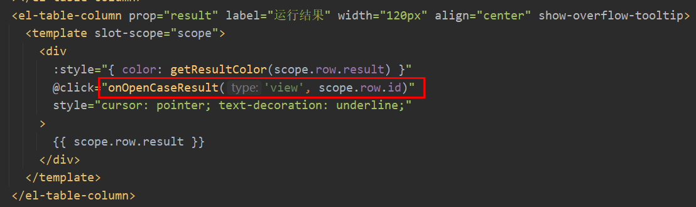
在运行结果列，添加了超链接，点击后打开用例结果弹窗，这个弹窗查看和运行用例都会用到，用第一个参数 type 做区分：
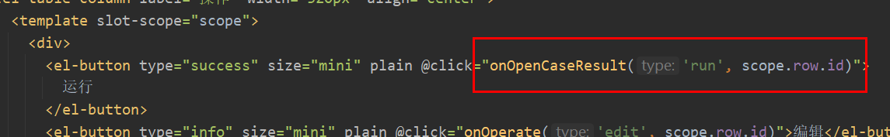
getResultColor 方法返回颜色样式：
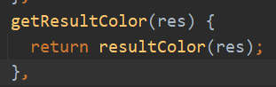
由于用例结果弹窗和用例列表表格都会有这个字段，于是把 resultColor 方法提取到了 utils/commonMethods.js 文件中：
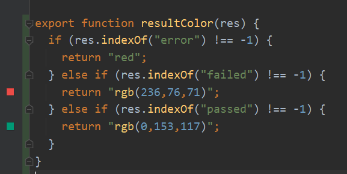
CaseManagement.vue 是一个父组件，它有 3 个子组件，如下图所示：
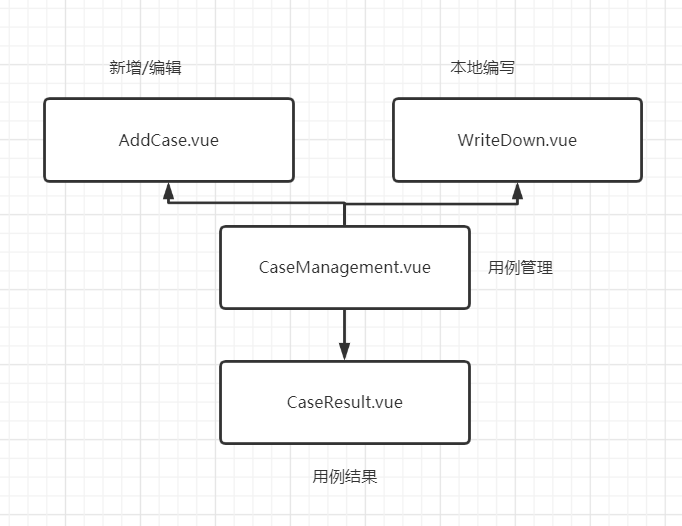
通过 import 后，添加标签代码引入：
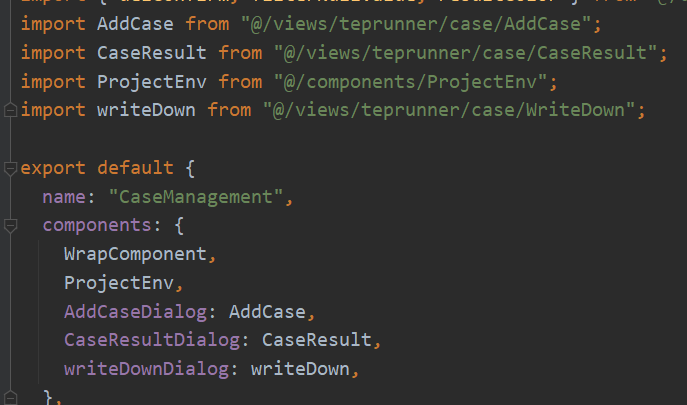
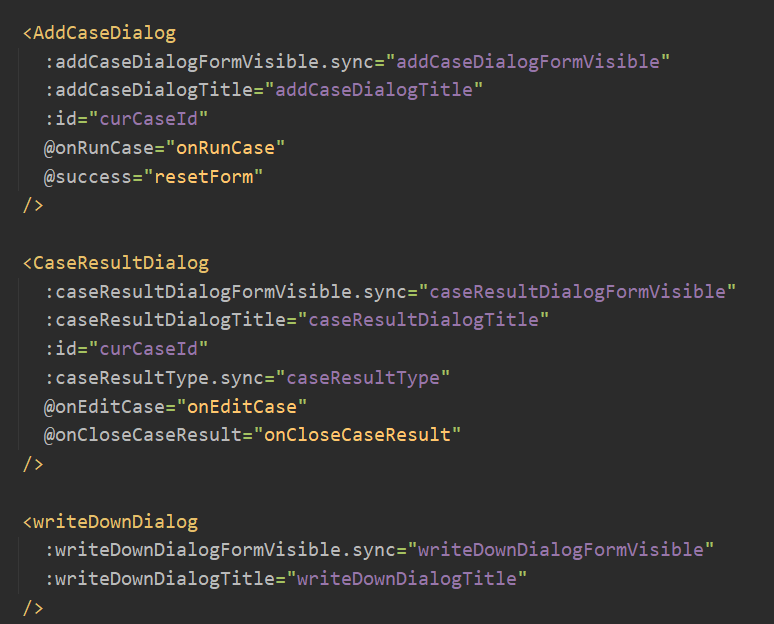
是否显示弹窗通过 DialogFormVisible 的 true/false 来控制，DialogTitle 指定弹窗标题。:开头是父组件向子组件传值， @开头是接受子组件发过来的 emit 事件通知，从而调用父组件中方法。这样就把这几个组件绑定在一起了！
从这里开始，这几个组件之间的关系会稍微有点绕，读不懂的话多结合源码看看！
有个小细节，运行按钮打开的弹框在关闭后，需要刷新用例列表更新数据，表格超链接打开的弹框关闭后不需要刷新：
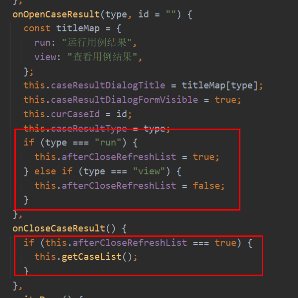
代码的意思是在打开弹窗时给 this.afterCloseRefreshList 赋值为 true/false，在关闭弹窗时判断要不要刷新列表。
接下来对这三个弹窗逐一进行开发。新建 views/teprunner/case/AddCase.vue 文件，增改代码不再赘述，添加 1 个运行按钮：
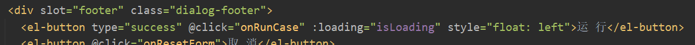
点击后调用：
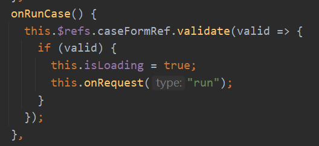
首先校验必填项，校验通过后，发起请求：
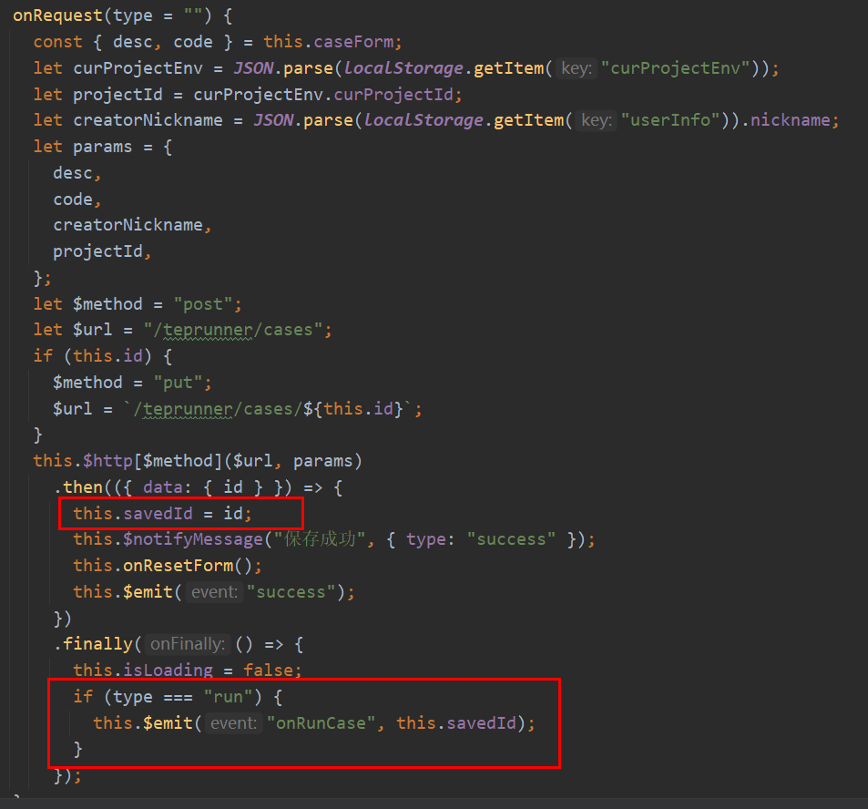
增加了一个 type 参数，因为选择保存或者运行，是两种类型，只有点击运行按钮，才用 emit 注册运行事件。新增用例的时候，没有用例 ID，就不能直接运行用例，为了解决这个问题，把保存后接口响应中的 ID，作为运行用例 ID。
新建 views/teprunner/case/CaseResult.vue 文件：
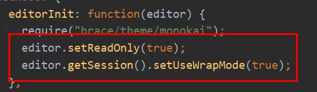
把代码编辑区设置为只读和自动换行。添加编辑按钮：
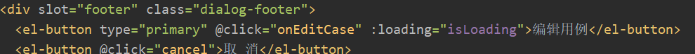
点击后调用：
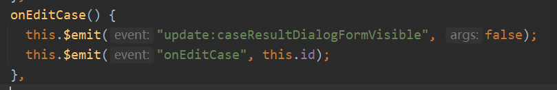
关闭弹窗，注册编辑事件。
这里把刚才结合到一起说一下，“运行/查看用例结果”弹框和“新增/编辑用例”弹框可以通过运行/编辑按钮相互切换，它们是通过注册事件，发送到父组件 CaseManagement.vue，再分别通知下去来实现的：
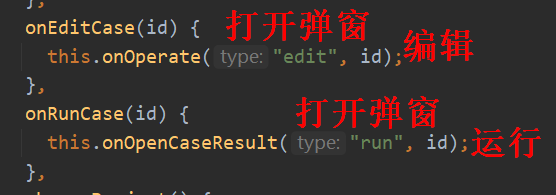
打开结果弹窗后，调用接口查询用例描述和创建人：
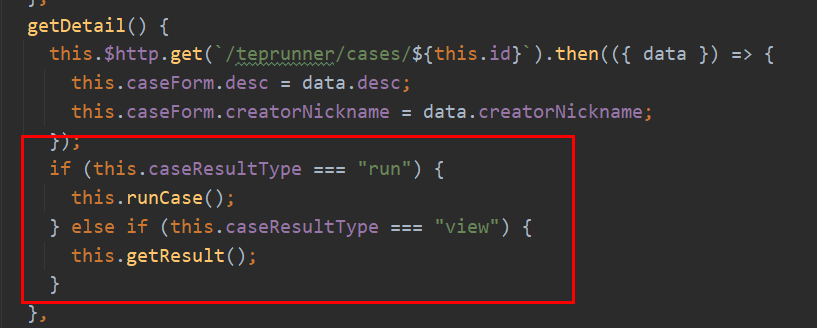
根据类型执行 runCase 或 getResult：
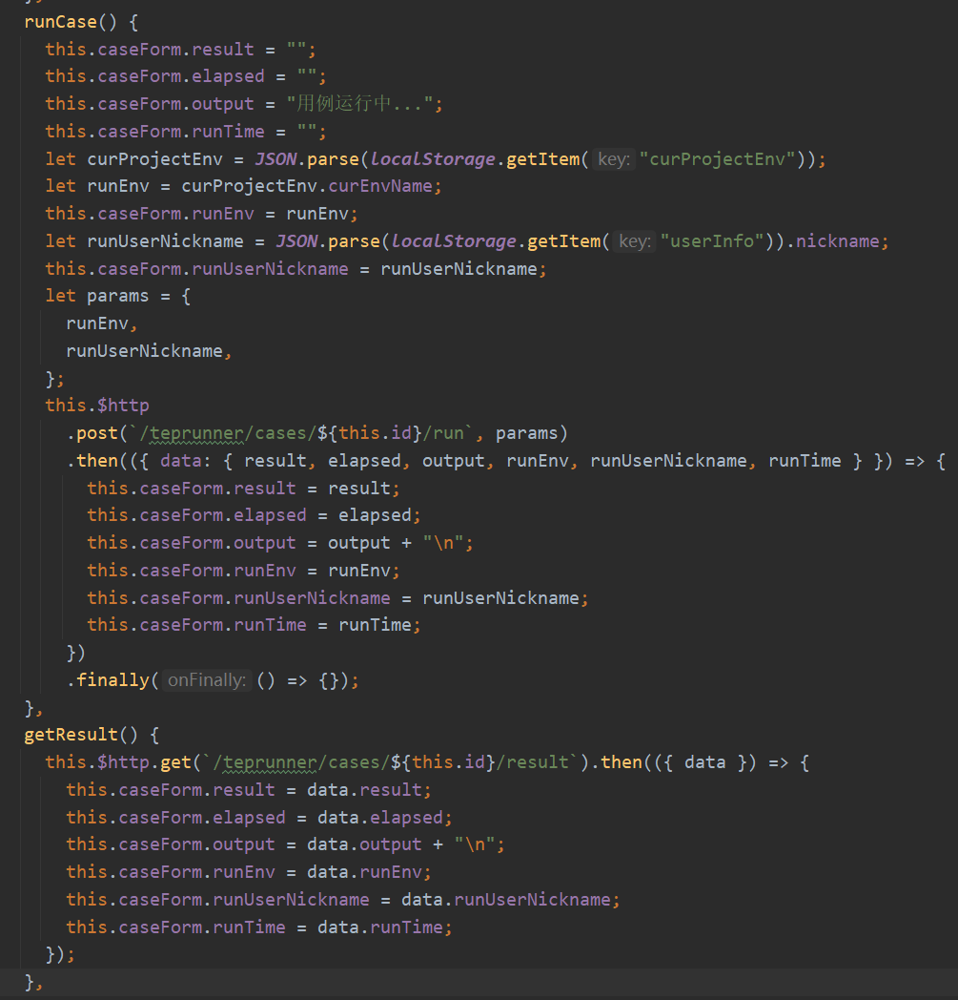
最后，新建 views/teprunner/case/WriteDown.vue 文件，大同小异，新代码是：
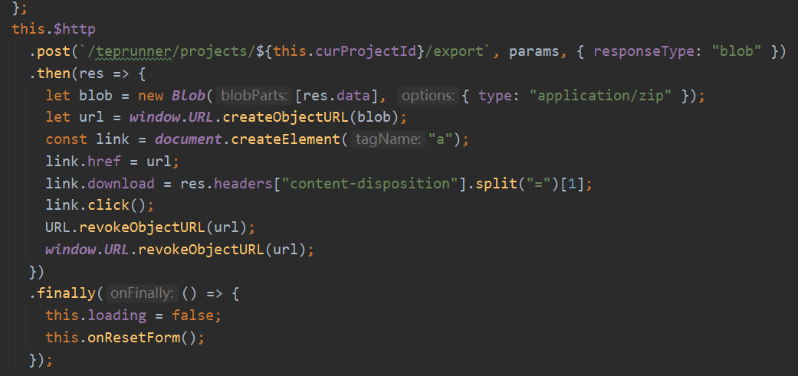
从百度搜来的，把后端返回的二进制文件字节流组装成压缩包，打开系统弹窗，下载文件。
小插曲
这一版比第一版代码优化了不少，尤其是几个组件之间如何传值这里，简化了很多，比如把执行用例从 CaseManagement.vue 转移到 CaseResult.vue 中来调用。在折腾过程中，也基本掌握了组件传值的写法，总结如下：
①父组件传值给子组件：子组件 props 接收，父组件标签绑定 data 传值，比如：
## 父组件
<CaseResultDialog :runEnv.sync="runEnv" />
data() {
return {
runEnv: "",
};
},
## 子组件
props: {
runEnv: {
type: String,
default: "",
},
},
②子组件通知父组件：子组件 this.$emit 注册事件，父组件标签@调用，比如：
## 父组件
<CaseResultDialog
@closeCaseResultDialog="closeCaseResultDialog"
/>
closeCaseResultDialog() {
console.log("close");
},
## 子组件
close() {
this.$emit("closeCaseResultDialog");
},
③子组件修改父组件传值：先把子组件 props 赋值给子组件 data，再 watch 子组件 data，比如：
## 父组件
<CaseResultDialog :runEnv.sync="runEnv" />
data() {
return {
runEnv: "",
};
},
## 子组件
props: {
runEnv: {
type: String,
default: "",
},
},
data() {
return {
runEnv: this.runEnv,
};
},
watch: {
runEnv(val) {
this.caseForm.runEnv = val;
},
},
第一版有很多第三种方式的代码，因为要把 CaseManagement 的执行结果传到 CaseResult 中去，在关闭弹窗时又需要清空，这些数据是从 CaseManagement 传过来的，直接改 Vue 会报错：禁止子组件直接修改父组件数据，防止数据错乱。比较麻烦，重写这一版优化了很多。
小结
本文的后端开发除了增删改查，还给出了 Django REST framework 函数视图如何引用序列化器，类视图重写方法如何引用非 serializer_class 绑定序列化器加分页。前端开发稍微有点复杂，尤其是父子组件如何传值，可能结合代码看看会更便于理解。从开篇写到这里，用户管理、项目管理、环境变量、fixtures、用例增删改查、运行用例、结果展示、下载环境，以 tep 为中间层的测试平台壳子已经做好了，万事已具备，只等 pytest 注入灵魂。